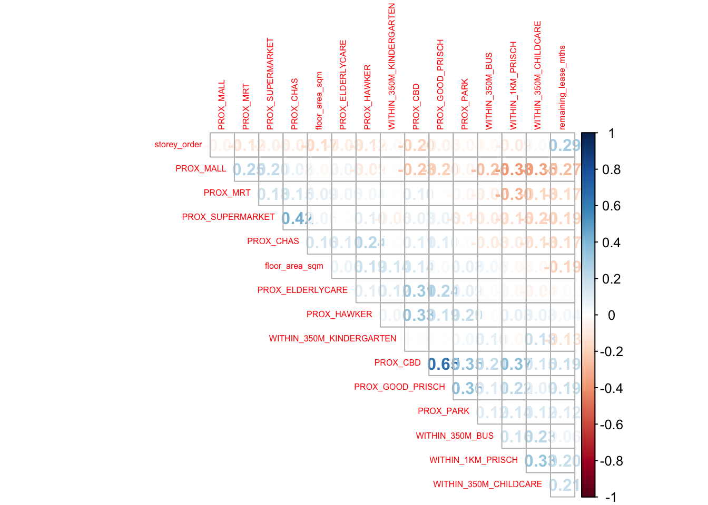

pacman::p_load(sf, spdep, GWmodel, SpatialML,
tmap, rsample, Metrics, tidyverse)Hands-on Exercise 9: Geographically Weighted Predictive Models
Installing packages and Loading packages that will be used for this Exercise
- rsample: Is being used to split data set into training and test data set
Reading data file to rds
mdata <- read_rds('data/aspatial/mdata.rds')Performing data sampling
- The entire data are split into training and test data sets with 65% ad 35% respectively by using initial_split() function from rsample package
set.seed(1234)
resale_split <- initial_split(mdata,
prop = 6.5/10,)
train_data <- training(resale_split)
test_data <- testing(resale_split)Saving test and training set
write_rds(train_data, "data/aspatial/train_data.rds")
write_rds(test_data, "data/aspatial/test_data.rds")Computing correlation matrix
- This is done to ensure that there is no multicolinearity problem
mdata_nogeo <- mdata %>%
st_drop_geometry()
corrplot::corrplot(cor(mdata_nogeo[, 2:17]),
diag = FALSE,
order = "AOE",
tl.pos = "td",
tl.cex = 0.5,
method = "number",
type = "upper")
- Reveals that all correlation values are below 0.8. Hence, there is no sign of multicolinearity
Building a non-spatial multiple linear regression
price_mlr <- lm(resale_price ~ floor_area_sqm +
storey_order + remaining_lease_mths +
PROX_CBD + PROX_ELDERLYCARE + PROX_HAWKER +
PROX_MRT + PROX_PARK + PROX_MALL +
PROX_SUPERMARKET + WITHIN_350M_KINDERGARTEN +
WITHIN_350M_CHILDCARE + WITHIN_350M_BUS +
WITHIN_1KM_PRISCH,
data=train_data)
summary(price_mlr)
Call:
lm(formula = resale_price ~ floor_area_sqm + storey_order + remaining_lease_mths +
PROX_CBD + PROX_ELDERLYCARE + PROX_HAWKER + PROX_MRT + PROX_PARK +
PROX_MALL + PROX_SUPERMARKET + WITHIN_350M_KINDERGARTEN +
WITHIN_350M_CHILDCARE + WITHIN_350M_BUS + WITHIN_1KM_PRISCH,
data = train_data)
Residuals:
Min 1Q Median 3Q Max
-205193 -39120 -1930 36545 472355
Coefficients:
Estimate Std. Error t value Pr(>|t|)
(Intercept) 107601.073 10601.261 10.150 < 2e-16 ***
floor_area_sqm 2780.698 90.579 30.699 < 2e-16 ***
storey_order 14299.298 339.115 42.167 < 2e-16 ***
remaining_lease_mths 344.490 4.592 75.027 < 2e-16 ***
PROX_CBD -16930.196 201.254 -84.124 < 2e-16 ***
PROX_ELDERLYCARE -14441.025 994.867 -14.516 < 2e-16 ***
PROX_HAWKER -19265.648 1273.597 -15.127 < 2e-16 ***
PROX_MRT -32564.272 1744.232 -18.670 < 2e-16 ***
PROX_PARK -5712.625 1483.885 -3.850 0.000119 ***
PROX_MALL -14717.388 2007.818 -7.330 2.47e-13 ***
PROX_SUPERMARKET -26881.938 4189.624 -6.416 1.46e-10 ***
WITHIN_350M_KINDERGARTEN 8520.472 632.812 13.464 < 2e-16 ***
WITHIN_350M_CHILDCARE -4510.650 354.015 -12.741 < 2e-16 ***
WITHIN_350M_BUS 813.493 222.574 3.655 0.000259 ***
WITHIN_1KM_PRISCH -8010.834 491.512 -16.298 < 2e-16 ***
---
Signif. codes: 0 '***' 0.001 '**' 0.01 '*' 0.05 '.' 0.1 ' ' 1
Residual standard error: 61650 on 10320 degrees of freedom
Multiple R-squared: 0.7373, Adjusted R-squared: 0.737
F-statistic: 2069 on 14 and 10320 DF, p-value: < 2.2e-16Saving multiple linear regression model
write_rds(price_mlr, "data/aspatial/price_mlr.rds" ) Converting the sf data frame to SpatialPointDataFrame
- this is needed as the function requires input to be in SpatialPointDataFrame format
train_data_sp <- as_Spatial(train_data)
train_data_spclass : SpatialPointsDataFrame
features : 10335
extent : 11597.31, 42623.63, 28217.39, 48741.06 (xmin, xmax, ymin, ymax)
crs : +proj=tmerc +lat_0=1.36666666666667 +lon_0=103.833333333333 +k=1 +x_0=28001.642 +y_0=38744.572 +ellps=WGS84 +towgs84=0,0,0,0,0,0,0 +units=m +no_defs
variables : 17
names : resale_price, floor_area_sqm, storey_order, remaining_lease_mths, PROX_CBD, PROX_ELDERLYCARE, PROX_HAWKER, PROX_MRT, PROX_PARK, PROX_GOOD_PRISCH, PROX_MALL, PROX_CHAS, PROX_SUPERMARKET, WITHIN_350M_KINDERGARTEN, WITHIN_350M_CHILDCARE, ...
min values : 218000, 74, 1, 555, 0.999393538715878, 1.98943787433087e-08, 0.0333358643817954, 0.0220407324774434, 0.0441643212802781, 0.0652540365486641, 0, 6.20621206270077e-09, 1.21715176356525e-07, 0, 0, ...
max values : 1186888, 133, 17, 1164, 19.6500691667807, 3.30163731686804, 2.86763031236184, 2.13060636038504, 2.41313695915468, 10.6223726149914, 2.27100643784442, 0.808332738794272, 1.57131703651196, 7, 20, ... Obtaining optimal adaptive bandwidth
bw_adaptive <- bw.gwr(resale_price ~ floor_area_sqm +
storey_order + remaining_lease_mths +
PROX_CBD + PROX_ELDERLYCARE + PROX_HAWKER +
PROX_MRT + PROX_PARK + PROX_MALL +
PROX_SUPERMARKET + WITHIN_350M_KINDERGARTEN +
WITHIN_350M_CHILDCARE + WITHIN_350M_BUS +
WITHIN_1KM_PRISCH,
data=train_data_sp,
approach="CV",
kernel="gaussian",
adaptive=TRUE,
longlat=FALSE)Take a cup of tea and have a break, it will take a few minutes.
-----A kind suggestion from GWmodel development group
Adaptive bandwidth: 6395 CV score: 3.60536e+13
Adaptive bandwidth: 3960 CV score: 3.320316e+13
Adaptive bandwidth: 2455 CV score: 2.928339e+13
Adaptive bandwidth: 1524 CV score: 2.550957e+13
Adaptive bandwidth: 950 CV score: 1.95632e+13
Adaptive bandwidth: 593 CV score: 1.58347e+13
Adaptive bandwidth: 375 CV score: 1.310042e+13
Adaptive bandwidth: 237 CV score: 1.113152e+13
Adaptive bandwidth: 155 CV score: 9.572037e+12
Adaptive bandwidth: 101 CV score: 8.457003e+12
Adaptive bandwidth: 71 CV score: 7.605058e+12
Adaptive bandwidth: 49 CV score: 6.965752e+12
Adaptive bandwidth: 38 CV score: 8.249935e+12
Adaptive bandwidth: 58 CV score: 7.275234e+12
Adaptive bandwidth: 45 CV score: 6.871439e+12
Adaptive bandwidth: 41 CV score: 6.7928e+12
Adaptive bandwidth: 40 CV score: 6.780447e+12
Adaptive bandwidth: 38 CV score: 8.249935e+12
Adaptive bandwidth: 40 CV score: 6.780447e+12 - Reveals that 40 neighbour points are the optimal bandwidth for adaptive bandwidth
Saving optimal bandwidth for adaptive bandwidth
write_rds(bw_adaptive, "data/aspatial/bw_adaptive.rds")Converting test data to SpatialPointDataFrame
test_data_sp <- test_data %>%
as_Spatial()
test_data_spclass : SpatialPointsDataFrame
features : 5566
extent : 11597.31, 42623.63, 28287.8, 48669.59 (xmin, xmax, ymin, ymax)
crs : +proj=tmerc +lat_0=1.36666666666667 +lon_0=103.833333333333 +k=1 +x_0=28001.642 +y_0=38744.572 +ellps=WGS84 +towgs84=0,0,0,0,0,0,0 +units=m +no_defs
variables : 17
names : resale_price, floor_area_sqm, storey_order, remaining_lease_mths, PROX_CBD, PROX_ELDERLYCARE, PROX_HAWKER, PROX_MRT, PROX_PARK, PROX_GOOD_PRISCH, PROX_MALL, PROX_CHAS, PROX_SUPERMARKET, WITHIN_350M_KINDERGARTEN, WITHIN_350M_CHILDCARE, ...
min values : 230888, 74, 1, 546, 1.00583660772922, 3.34897933104965e-07, 0.0474019664161957, 0.0414043955932523, 0.0502664084494264, 0.0907500295577619, 0, 4.55547870890763e-09, 1.21715176356525e-07, 0, 0, ...
max values : 1050000, 138, 14, 1151, 19.632402730488, 3.30163731686804, 2.83106651960209, 2.13060636038504, 2.41313695915468, 10.6169590126272, 2.26056404492346, 0.79249074802552, 1.53786629004208, 7, 16, ... Computing adaptive bandwidth for the test data
gwr_bw_test_adaptive <- bw.gwr(resale_price ~ floor_area_sqm +
storey_order + remaining_lease_mths +
PROX_CBD + PROX_ELDERLYCARE + PROX_HAWKER +
PROX_MRT + PROX_PARK + PROX_MALL +
PROX_SUPERMARKET + WITHIN_350M_KINDERGARTEN +
WITHIN_350M_CHILDCARE + WITHIN_350M_BUS +
WITHIN_1KM_PRISCH,
data=test_data_sp,
approach="CV",
kernel="gaussian",
adaptive=TRUE,
longlat=FALSE)Take a cup of tea and have a break, it will take a few minutes.
-----A kind suggestion from GWmodel development group
Adaptive bandwidth: 3447 CV score: 1.902155e+13
Adaptive bandwidth: 2138 CV score: 1.752645e+13
Adaptive bandwidth: 1328 CV score: 1.556299e+13
Adaptive bandwidth: 828 CV score: 1.357498e+13
Adaptive bandwidth: 518 CV score: 1.030751e+13
Adaptive bandwidth: 327 CV score: 8.348364e+12
Adaptive bandwidth: 208 CV score: 6.860544e+12
Adaptive bandwidth: 135 CV score: 5.969504e+12
Adaptive bandwidth: 89 CV score: 5.242221e+12
Adaptive bandwidth: 62 CV score: 4.742767e+12
Adaptive bandwidth: 43 CV score: 4.357839e+12
Adaptive bandwidth: 34 CV score: 4.125848e+12
Adaptive bandwidth: 25 CV score: 4.04299e+12
Adaptive bandwidth: 23 CV score: 1.549626e+13
Adaptive bandwidth: 30 CV score: 4.074906e+12
Adaptive bandwidth: 25 CV score: 4.04299e+12 Computing predicted values of the test data
Extracting coordinates data
coords <- st_coordinates(mdata)
coords_train <- st_coordinates(train_data)
coords_test <- st_coordinates(test_data)Dropping geometry field column
train_data <- train_data %>%
st_drop_geometry()Calibrating Random Forest Model
set.seed(1234)
rf <- ranger(resale_price ~ floor_area_sqm + storey_order +
remaining_lease_mths + PROX_CBD + PROX_ELDERLYCARE +
PROX_HAWKER + PROX_MRT + PROX_PARK + PROX_MALL +
PROX_SUPERMARKET + WITHIN_350M_KINDERGARTEN +
WITHIN_350M_CHILDCARE + WITHIN_350M_BUS +
WITHIN_1KM_PRISCH,
data=train_data)
rfRanger result
Call:
ranger(resale_price ~ floor_area_sqm + storey_order + remaining_lease_mths + PROX_CBD + PROX_ELDERLYCARE + PROX_HAWKER + PROX_MRT + PROX_PARK + PROX_MALL + PROX_SUPERMARKET + WITHIN_350M_KINDERGARTEN + WITHIN_350M_CHILDCARE + WITHIN_350M_BUS + WITHIN_1KM_PRISCH, data = train_data)
Type: Regression
Number of trees: 500
Sample size: 10335
Number of independent variables: 14
Mtry: 3
Target node size: 5
Variable importance mode: none
Splitrule: variance
OOB prediction error (MSE): 731404460
R squared (OOB): 0.9493789 Saving random forest model for future use
write_rds(rf, "data/aspatial/rf.rds")Calibrating Geographical Random Forest model
set.seed(1234)
gwRF_adaptive <- grf(formula = resale_price ~ floor_area_sqm + storey_order + remaining_lease_mths + PROX_CBD + PROX_ELDERLYCARE +
PROX_HAWKER + PROX_MRT + PROX_PARK + PROX_MALL +
PROX_SUPERMARKET + WITHIN_350M_KINDERGARTEN +
WITHIN_350M_CHILDCARE + WITHIN_350M_BUS +
WITHIN_1KM_PRISCH,
dframe=train_data,
bw=55,
kernel="adaptive",
coords=coords_train)
Number of Observations: 10335Number of Independent Variables: 14Kernel: Adaptive
Neightbours: 55
--------------- Global ML Model Summary ---------------Ranger result
Call:
ranger(resale_price ~ floor_area_sqm + storey_order + remaining_lease_mths + PROX_CBD + PROX_ELDERLYCARE + PROX_HAWKER + PROX_MRT + PROX_PARK + PROX_MALL + PROX_SUPERMARKET + WITHIN_350M_KINDERGARTEN + WITHIN_350M_CHILDCARE + WITHIN_350M_BUS + WITHIN_1KM_PRISCH, data = train_data, num.trees = 500, mtry = 4, importance = "impurity", num.threads = NULL)
Type: Regression
Number of trees: 500
Sample size: 10335
Number of independent variables: 14
Mtry: 4
Target node size: 5
Variable importance mode: impurity
Splitrule: variance
OOB prediction error (MSE): 697593819
R squared (OOB): 0.9517189
Importance: floor_area_sqm storey_order remaining_lease_mths
7.413197e+12 1.538950e+13 2.890637e+13
PROX_CBD PROX_ELDERLYCARE PROX_HAWKER
5.310066e+13 7.285092e+12 5.568548e+12
PROX_MRT PROX_PARK PROX_MALL
7.369745e+12 4.894344e+12 4.223286e+12
PROX_SUPERMARKET WITHIN_350M_KINDERGARTEN WITHIN_350M_CHILDCARE
2.793853e+12 1.018586e+12 1.710374e+12
WITHIN_350M_BUS WITHIN_1KM_PRISCH
1.589501e+12 6.794634e+12
Mean Square Error (Not OOB): 173951416.766R-squared (Not OOB) %: 98.796AIC (Not OOB): 196129.252AICc (Not OOB): 196129.299
--------------- Local Model Summary ---------------
Residuals OOB: Min. 1st Qu. Median Mean 3rd Qu. Max.
-236112.0 -13033.7 444.4 593.8 14831.5 358041.7
Residuals Predicted (Not OOB): Min. 1st Qu. Median Mean 3rd Qu. Max.
-79279.83 -3510.70 54.56 50.98 3909.85 83074.08
Local Variable Importance: Min Max Mean StD
floor_area_sqm 0 401562922035 18210850992 41426270899
storey_order 302736445 243728744368 16368419468 23620589843
remaining_lease_mths 696564138 546463600727 34119912443 70328183398
PROX_CBD 55173040 382484896335 12154563393 29293290548
PROX_ELDERLYCARE 45182031 344081962746 10597657883 24546405941
PROX_HAWKER 43516026 342597797419 10551807020 23408387903
PROX_MRT 54234551 299075025906 9873129985 21055852211
PROX_PARK 49919822 322633843469 9353956995 19517077658
PROX_MALL 43296133 433263607933 11247374493 27537334970
PROX_SUPERMARKET 52665827 417310417234 10802122271 26572460731
WITHIN_350M_KINDERGARTEN 0 186468064682 2848177740 12928886968
WITHIN_350M_CHILDCARE 0 255236737234 5526292324 18109971102
WITHIN_350M_BUS 0 193828795378 4747552546 11886064288
WITHIN_1KM_PRISCH 0 178360608427 1778262602 7163381668
Mean squared error (OOB): 930426169.333R-squared (OOB) %: 93.56AIC (OOB): 213459.669AICc (OOB): 213459.716Mean squared error Predicted (Not OOB): 73859413.696R-squared Predicted (Not OOB) %: 99.489AIC Predicted (Not OOB): 187276.161AICc Predicted (Not OOB): 187276.208
Calculation time (in seconds): 5.4825Saving the model for future use
write_rds(gwRF_adaptive, "data/aspatial/gwRF_adaptive.rds")Preparing test data
- This is used to combine test data with corresponding coordinates data
test_data <- cbind(test_data, coords_test) |>
st_drop_geometry()gwRF_pred <- predict.grf(gwRF_adaptive,
test_data,
x.var.name="X",
y.var.name="Y",
local.w=1,
global.w=0)Predicting with test data
- predict.grf() function from spatialML package is used to predict geospatial weighted random forest model
Saving output
GRF_pred <- write_rds(gwRF_pred, "data/aspatial/GRF_pred.rds")Converting output into a data frame for further visualisation and analysis
GRF_pred_df <- as.data.frame(GRF_pred)Appending predicted values to the test_data
test_data_p <- cbind(test_data, GRF_pred_df)Calculating Root Mean Square Error
rmse(test_data_p$resale_price,
test_data_p$GRF_pred)[1] 27302.9Visualising the predicted values
ggplot(data = test_data_p,
aes(x = GRF_pred,
y = resale_price)) +
geom_point()